Formation R
Collection de packages tidyverse
Laure Velez (laure.velez@umontpellier.fr)
Mathieu Depetris (mathieu.depetris@ird.fr)
Monique Simier (monique.simier@ird.fr)
3 et 4 avril 2025
© RStudio
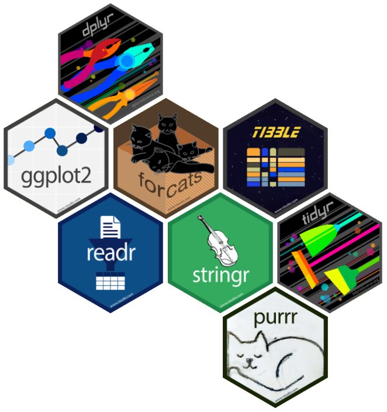
Préambule et introduction
Partie 1 : Importation de données sous R avec readr
Partie 2 : Manipulation de données avec dplyr
Partie 3 : Nettoyage des données avec tidyr
Partie 4 : Extension à la manipulation de données, cas spécifiques
Partie 5 : Visualisation graphique avec ggplot2
Formation fortement inspirée du site de Joseph Larmarange
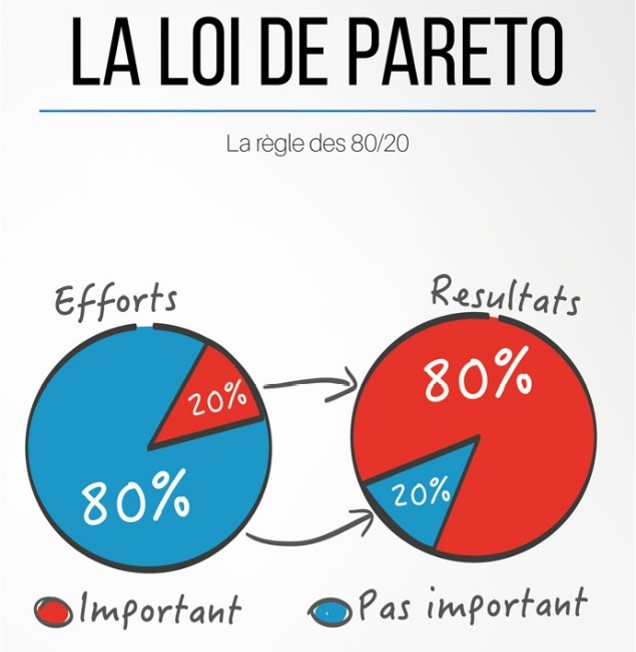
read.csv, read.csv2) ou tabulés (read.table) ou avec des séparateurs quelconques (read.delim)Les fonctions de readr les plus utilisées sont :
# Fonction générale, pour importer un fichier avec un délimiteur quelconque
read_delim()
# Import fichiers csv au format anglais (point décimal et séparateur virgule)
read_csv()
# Import fichiers csv au format français (virgule décimale et séparateur point-virgule)
read_csv2()
# Import fichiers au format tsv ou les valeurs sont séparées par des tabulations
read_tsv()
# Pour lire un fichier en "chunks", c'est à dire en tranches dont on définit la taille en nombre de lignes.
# Cette fonction permet de lire de très gros fichiers et aussi d'appliquer une fonction (CallBack) sur les données à chaque tranche.
# xxx est à remplacer par csv, csv2, delim
read_xxx_chunked()read_delim sont utilisable
read_csv et read_csv2 pour les fichiers csv,read_tsv pour les fichiers tsv_chunked pour commencer à s’amuser
read_delim_chunked, read_csv_chunked, read_csv2_chunked et read_tsv_chunkedspeccols_condense permet d’afficher une version simplifiée des spécifications en affichant le type par défaut le plus fréquent et liste les colonnes avec un type différent. Attention, l’entrée est un objet de type spec.read_sheet pour lire une feuillegs4_get ou encore gs4_find pour lire les métadonnées associées aux feuilleswrite_sheet ou sheet_append pour exporter des feuillescol_typesc pour un caractère à la place de col_charactercol_select (sélection et renommage)_chunked ou encore l’argument skipsurvey_metadata,reef_fish_biomassreef_fish_abundanceAttention ! On ne triche pas, aucune manipulation des fichiers pré-importation
survey_metadata,reef_fish_biomassreef_fish_abundanceAttention ! On ne triche pas, aucune manipulation des fichiers pré-importation
Lire le fichier survey_metadata et le stocker dans un objet R survey_metadata en sélectionnant le pays Indonésie, une profondeur inférieure à 20m et une visibilité supérieure à 10m.
Lire le fichier survey_metadata et le stocker dans un objet R survey_metadata en sélectionnant le pays Indonésie, une profondeur inférieure à 20m et une visibilité supérieure à 10m.
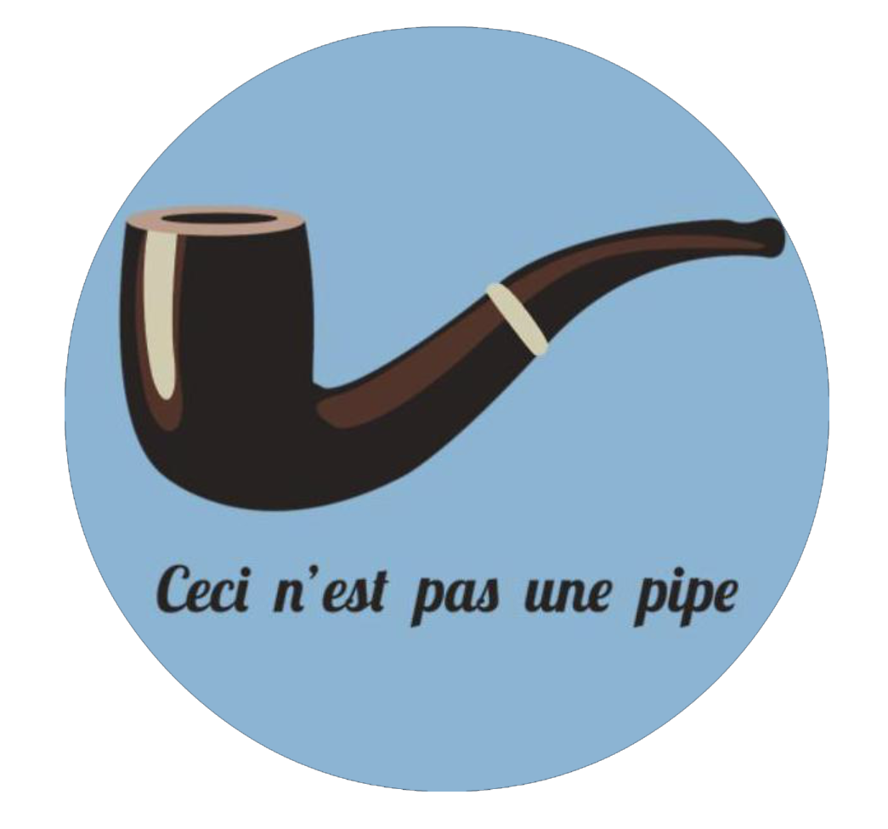
Type de fonctions qui retournent un sous-ensemble de lignes
# sélection d'une ou plusieurs lignes par position absolue
slice()
# sélection au hasard d'un nombre de lignes ou d'une proportion du jeu de données
slice_sample()
# sélection des n dernières lignes
slice_tail()
# sélection des n premières lignes
slice_head()
# sélection des lignes avec les valeurs les plus petites ou grandes
slice_min()
slice_max()
# sélection des valeurs distinctes
distinct()
# sélection en fonction d'opérateurs logiques et/ou booléens
filter()Renvoient une valeur TRUE ou FALSE
Ici on a effectué 2 opérations, mais on peut imaginer en faire beaucoup plus dans la réalité.
Grâce à la syntaxe de dplyr, on peut répondre à ce besoin de deux manières différentes.
La première est d’effectuer toutes les opérations en une fois en les emboîtant :
biomass_exercice2_1_distinct_filter <- filter(.data = distinct(.data = reef_fish_biomass),
biomass != 0
& ! family %in% c("Mullidae",
"Apogonidae")
& size_class <= 10)Cependant cela a plusieurs inconvénients. La structure est peu lisible, les opérations apparaissent dans l’ordre inverse de leur réalisation et il est difficile de voir quel paramètre se rapporte à quelle fonction.
Il se note %>%
Son fonctionnement est le suivant : si j’exécute expr %>% f, le résultat de l’expression expr, à gauche du pipe, sera passé comme premier argument à la fonction f, à droite du pipe, ce qui revient à exécuter f(expr)
L’intérêt est que l’on peut enchainer plusieurs pipes et surtout on simplifie la syntaxe
Avec notre exemple précédent cela donne :
Type de fonctions qui retournent un sous-ensemble de colonnes sous la forme d’un vecteur ou d’une table
# extraction des valeurs d'une colonne sous la forme d'un vecteur
# on peut utiliser des noms ou les ids
pull()
# extraction d'une colonne sous la forme d'une table
# bien regarder les arguments de la fonction car on peut faire beaucoup
select()
# Changer l'ordre ou la place d'une ou plusieurs colonnes
# ne pas oublier les arguments .after et .before
relocate()On a commencé à l’aborder de manière instinctive avec relocate()
Globalement, ce sont des fonctions qui ont un vecteur en entrée et retournent un vecteur de la même taille en sortie
# solution
biomass_exercice2_2 <- mutate(.data = biomass_exercice2_1_distinct_filter,
survey_id_full = paste(survey_id,
species_name,
size_class,
sep = "_")) %>%
relocate(survey_id_full,
.before = survey_id) %>%
select(-4,
-reporting_name) %>%
rename(size_class_cm = size_class) %>%
mutate(size_class_mm = size_class_cm * 10) %>%
select(-size_class_cm) %>%
arrange(desc(size_class_mm))Fonctions qui vont créer une nouvelle table avec des resumés statistiques. De manière globale, les fonctions associées vont utiliser en entrée des vecteurs et en sortie une ou plusieurs valeurs ( en nombre inférieur au nombre de vecteurs d’entrée)
Fonction clé
summarise()
# Beaucoup, beaucoup d'options et de possibilités
# Compter le nombre de valeurs/lignes
n()
# Compter le nombre de valeurs/lignes distinctes
n_distinct()
# Faire une moyenne
mean()
# Faire une somme, option na.rm disponible
sum()
# Utiliser des notions de position
first()
last()
# Ou de rang
quantile()
min()
max()Pour le moment on a fait des opérations sur l’ensemble du jeu de données, pas très pertinent non ?
Fonction de création de groupe
# on peut définir nos groupes en fonction des modalités des variables
#on peut aussi utiliser des arguments des fonctions quand c'est proposé, exemple avec .by de summarise()
group_by()
# ou alors en isolant chaque ligne
rowwise()# via un summarise (argument experimental, attention à la pérennité)
.groups
# de manière plus générale
ungroups()# solution
biomass_exercice2_3 <- biomass_exercice2_2 %>%
dplyr::group_by(survey_id_full) %>%
mutate(sum_biomass = sum(x = biomass)) %>%
ungroup() %>%
distinct(survey_id_full,
.keep_all = TRUE)
biomass_exercice2_3_sample_verification <- dplyr::group_by(.data = biomass_exercice2_2,
family) %>%
summarise(nb_sample_family = n()) %>%
mutate(total = sum(nb_sample_family))case_when(
operateur(s) booléen(s) ou logique(s) ~ output1,
operateur(s) booléen(s) ou logique(s) ~ output2,
....
operateur(s) booléen(s) ou logique(s) ~ output_n,
TRUE ~ output si rien ne marche au dessus
)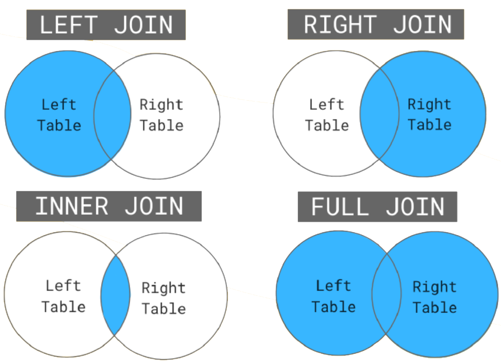
L’objectif du package tidyr est de fournir des fonctions pour arranger et nettoyer ses données dans le but de les convertir dans un format “tidy”.
Les différents verbes viennent s’ajouter à tous ceux que nous avons déjà vus avec readr et dplyr et ils s’intègrent parfaitement dans la série de pipe %>% permettant d’enchainer les opérations.
Les données “tidy”, qu’est ce que c’est?
1 variable = 1 colonne
1 observation = 1 ligne/case
1 type d’observation par table
Lien vers le cheatsheet de tidyr.
pivot_wider()et pivot_longer()sont les successeurs des fonctions en base R du package reshape puis reshape2. Et se nommaient spread()et gather() dans les premières versions de tidyr
Oui les données de biomasse sont tidy, nous avons bien une observation par ligne Non les données d’abondance ne sont pas tidy, car elles sont en format “wide”
sp_size et abundancesp_size et abundancesurvey_id_full qui est l’union entre le survey_id et sp_size avec comme séparateur un “_”.abundance après la colonne biomassgenus et species à partir de species_namehas_pq_scores_in_db jusqu’à methodshas_pq_scores_in_db est en position 23genus et species à partir de species_namehas_pq_scores_in_db jusqu’à methodshas_pq_scores_in_db est en position 23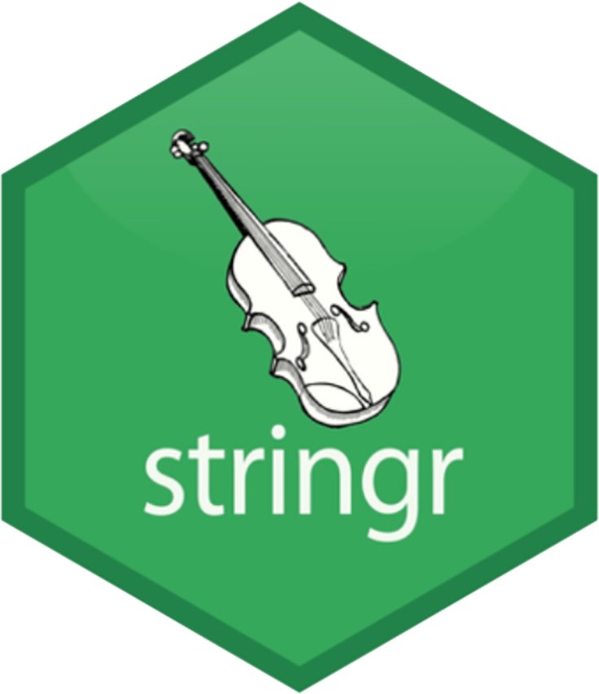
str_mutate (ça vous rappelle quelque chose ?)string : le vecteur d’entréepattern : le motif que l’on va chercher à regarderreplacement : la valeur de remplacementstart et end : emplacement ou indice de position dans une chaine de caractèrenegate : si TRUE, le résultat sera l’inverse de ce que l’on demandesep : caractère(s) à insérer dans le vecteur d’entréecollapse : souvent confondu avec l’argument sep. Caractère(s) qui vont combiner les résultats (= vecteur d’entrée avec plusieurs éléments) entre une seule et unique chaine de caractères.decreasing : utilisé pour les fonctions d’ordre ou de triRenvoient une réponse (pas d’extraction)
# détection d'un motif dans une chaine de caractère
str_detect() et str_like()
# détection d'un motif au début ou à la fin d'une chaine de caractère
str_starts() et str_ends()
# détection des lignes contenant le motif
str_which()
# détection de la position du motif dans la chaine de caractère (début et fin)
# sans le _all la détection passe à la chaine suivante dès qu'un motif est trouvé
str_locate() et str_locate_all()
# comptage du nombre de fois que le motif est détecté dans une chaine de caractère
str_count()Renvoient une chaine de caractère
# extraction d'une chaine à un ou des endroits bien précis
# utilisation d'indices de position
str_sub() et str_sub_all()
# extraction des chaines, completes, contenu un motif défini
str_subset()
# extraction d'un motif dans une chaine de caractère et retour sous forme de vecteur
# par "défaut" la detection passe à la chaine suivante dés qu'un motif est trouvé
str_extract() et str_extract_all()
# extraction d'un motif dans une chaine de caractère et retour sous forme de matrix
# sans le _all la detection passe à la chaine suivante dés qu'un motif est trouvé
str_match() et str_match_all()Embiotocidae puis utiliser ces indices pour sélectionner ces lignes et les variables associées (on peut utiliser une fonction de manipulation de dplyr)Embiotoca dans ce nouveau jeu de donnéesBritish ColumbiaEmbiotocidae puis utiliser ces indices pour sélectionner ces lignes et les variables associées (on peut utiliser une fonction de manipulation de dplyr)Embiotoca dans ce nouveau jeu de donnéesBritish Columbia# solution
biomass_survey_exercice4_1 <- slice(.data = biomass_survey_exercice2_4,
str_which(string = biomass_survey_exercice2_4$family,
pattern = "Embiotocidae"))
sum_data_embiotoca_exercice4_1 <- sum(str_count(string = biomass_survey_exercice4_1$species_name,
pattern = "Embiotoca."))
location_biomass_survey_exercice4_1 <- unique(str_subset(string = biomass_survey_exercice4_1$location,
pattern = "British Columbia",
negate = TRUE))# largeur/nombre de caractère
# attention aux espaces et caractères masqués
str_length()
# ajout "d'espace" à une chaine de caractère
str_pad()
# tronquer une chaîne de caractères à un nombre fixe de caractères
str_trunc()
# supprimer des espaces
# au début et/ou à la fin d'une chaine
str_trim()
# au début, à la fin et réduction des espaces à un seul
str_squish()En lien avec des manipulations de type vectorisation (= conservation de la structure des données d’entrée)
# remplacement du motif via un assignation
str_sub() <- value
# remplacement d'un motif par un autre
# sans le _all le remplacement passe à la chaine suivante dés qu'un motif est trouvé
str_replace() et str_replace_all()
# suppression d'un motif
# sans le _all la suppression passe à la chaine suivante dés qu'un motif est trouvé
str_remove() et str_remove_all()
# manipulation de taille de caractère (majuscule, minuscule, ...)
# attention à la spécification de la langue et au nom, un title n'est pas forcement un title que vous cherchez
str_to_lower()
str_to_upper()
str_to_title()
str_to_sentence()biomass_survey_exercice4_1, créer une nouvelle variable, site_name_length_ori, contenant la taille des chaines de caractère de la variable site_namesite_name en enlevant les espaces en trop (avant, après et au milieu) et la stocker dans une variable site_name_cleansite_name_clean sauf celles en début de chainebiomass_survey_exercice4_1, créer une nouvelle variable, site_name_length_ori, contenant la taille des chaines de caractère de la variable site_namesite_name en enlevant les espaces en trop (avant, après et au milieu) et la stocker dans une variable site_name_cleansite_name_clean sauf celles en début de chaineTrès pratique surtout si utilisation via langage tidyverse
# jointure de plusieurs chaines de caractère en une seule (conservation structure en lignes)
str_c()
# jointure de plusieurs chaines de caractère en un seul vecteur (utiliser argument collapse)
str_flatten()
# repetition d'une chaine de caractère
str_dup()
# suppression des chaines de caractère repetées
str_unique()
# division d'une chaine de caractère en fonction d'un motif, le resultat est une liste de chaine
str_split()
# argument n pour spécifier le nombre possible de correspondances
# si on veut retourner un vecteur (ne fonction que sur une chaine unique)
str_split_1()
# si on veut retourner une matrice (argument n obligatoire)
str_split_fixed()
# si on veut extraire uniquement une partie de la chaine
str_split_i()
# si on veut faire des interpolations dans des chaines de caractère (similaire aux fonctions type paste())
# utilisation de {} dans notre expression
str_glue()
# variante si on veut l'utiliser dans le cadre d'une pipe
str_glue_data()Très simple, mais attention à la définition des arguments, notamment le locale qui va définir l’environnement de l’utilisateur.
A voir comme un petite boite à outils
biomass_survey_exercice4_2, créer deux nouvelles variables, species_name_first et species_name_second, qui contiennent une division de la variable species_name en deux mots (on utilisera la valeur [.] pour spécifier . comme séparateur, bizarre non ?)biomass_percentage qui contiendra la biomasse exprimée en % (on veut le signe % à la fin de la chaine)description les variables species_name_first, species_name_second et biomass_percentage pour obtenir une phrase correcte (avec les bons espaces aux bons endroits, la variable biomass_percentage en parenthèses et suivi de la chaine de caractère of total biomass)description_shinny. Attention, il faut parfois regarder au-delà de ce qu’on voit dans la console de R…biomass_survey_exercice4_2, créer deux nouvelles variables, species_name_first et species_name_second, qui contiennent une division de la variable species_name en deux mots (on utilisera la valeur [.] pour spécifier . comme séparateur, bizarre non ?)biomass_percentage qui contiendra la biomasse exprimée en % (on veut le signe % à la fin de la chaine)description les variables species_name_first, species_name_second et biomass_percentage pour obtenir une phrase correcte (avec les bons espaces aux bons endroits, la variable biomass_percentage en parenthèses et suivi de la chaine de caractère of total biomass)description_shinny. Attention, il faut parfois regarder au-delà de ce qu’on voit dans la console de R…# solution
biomass_survey_exercice4_3 <- biomass_survey_exercice4_2 %>%
mutate(species_name_first = str_split_i(string = species_name,
pattern = "[.]",
i = 1),
species_name_second = str_split_i(string = species_name,
pattern = "[.]",
i = 2),
biomass_percentage = str_glue("{round(x = biomass * 100 / sum_biomass)}%"),
description = str_c(species_name_first ,
species_name_second,
str_c("(",
biomass_percentage,
" of total biomass)"),
sep = " "),
description_shinny = str_wrap(string = description,
width = 20))[.] pour un motif, c’est une expression regulièrebiomass_survey_exercice4_3, je veux séparer les chiffres et les lettres de la variable site_code. Comment trouver un motif qui marche aussi bien pour la valeur USWC1 et BC3 ?biomass_survey_exercice4_3, je veux séparer les chiffres et les lettres de la variable site_code. Comment trouver un motif qui marche aussi bien pour la valeur USWC1 et BC3 ?Analyse semi-automatique des dates et des heures
Les fonctions vont essayer de trouver le séparateur et le format
Possibilité de rajouter l’indicateur de fuseau horaire via l’argument tz
# Pour exprimer un élément dans un autre fuseau horaire
with_tz()
# Pour forcer le changement d'un fuseau horaire mais en conservant la même heure
force_tz()# arrondi inférieur sur "l'unité" la plus proche
floor_date()
# arrondi inférieur sur "l'unité" la plus proche
round_date()
# arrondie supérieur sur "l'unité" la plus proche
ceiling_date()biomass_survey_exercice4_3, créer une variable survey_date_as_date qui est la conversion de la variable survey_date en datesurvey_year qui contient l’année de la variable survey_date_as_datesurvey_date_as_date. Stocker l’information dans une nouvelle colonne duration_since_nownext_survey_date qui ajoute 12 mois à la variable survey_date_as_datenext_survey_date, qu’a-t-elle de particulier ?survey_date_as_date à 12h et la stocker dans une variable next_survey_date_correctbiomass_survey_exercice4_3, créer une variable survey_date_as_date qui est la conversion de la variable survey_date en datesurvey_year qui contient l’année de la variable survey_date_as_datesurvey_date_as_date. Stocker l’information dans une nouvelle colonne duration_since_nownext_survey_date qui ajoute 12 mois à la variable survey_date_as_datenext_survey_date, qu’a-t-elle de particulier ?survey_date_as_date à 12h et la stocker dans une variable next_survey_date_correct# solution
biomass_survey_exercice5_1 <- biomass_survey_exercice4_3 %>%
mutate(survey_date_as_date = dmy(survey_date),
survey_year = year(x = survey_date_as_date),
duration_since_now = today() - survey_date_as_date,
next_survey_date = survey_date_as_date + dmonths(x = 12),
next_survey_date_correct = next_survey_date %>%
{hour(.) <- 12; .}) %>%
relocate(survey_date_as_date,
next_survey_date,
survey_year,
duration_since_now,
next_survey_date_correct,
.after = survey_date)Explication : { ... } définit un bloc qui sera exécutées dans l’ordre, ; permet de séparer les actions, hour(.) <- 12 modifie l’heure de l’objet . en 12 et . retourne l’objet modifié
ggplot2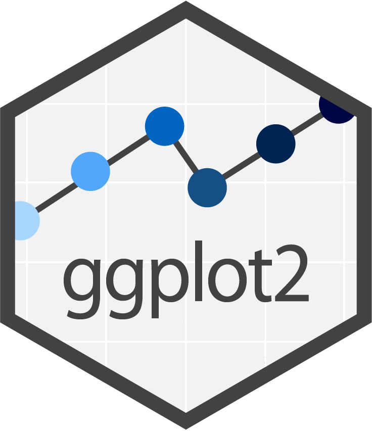
Le site From Data To Viz, une pépite
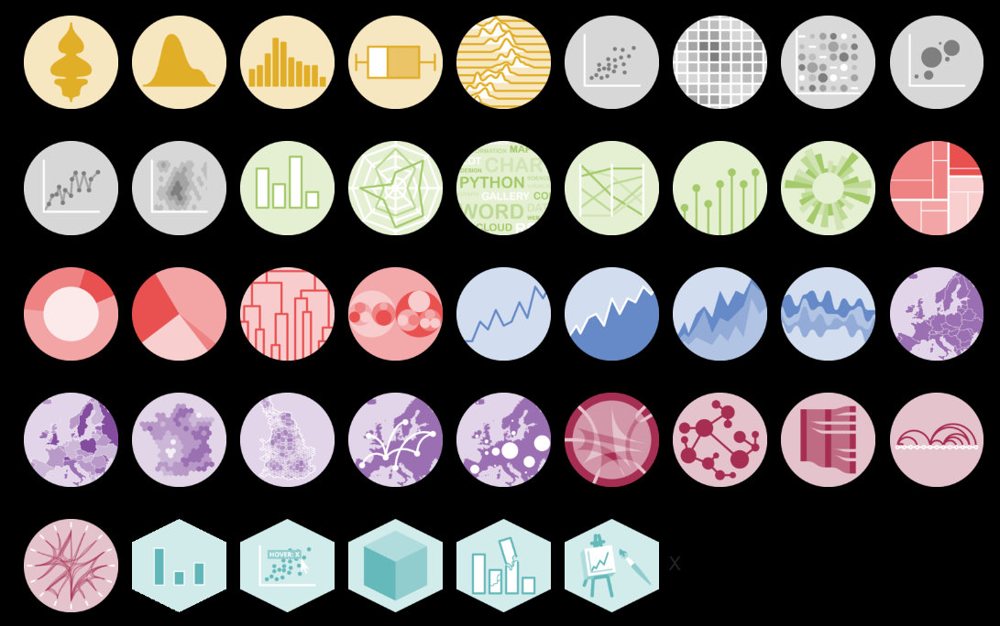
aesthétique : une succession de couchesLa Structure
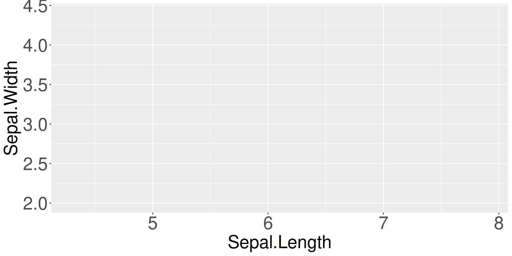
Le Type de représentation
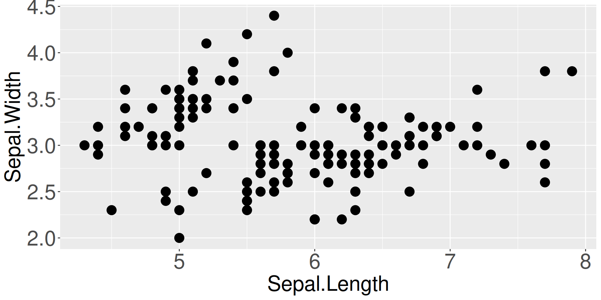
Les Couleurs
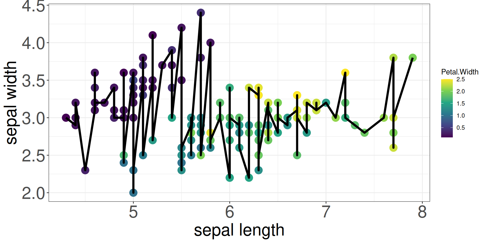
Le Lifting final
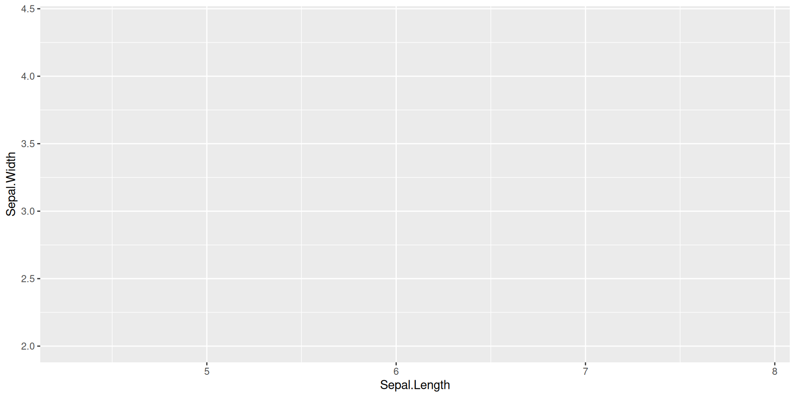
Pour la structure de la figure, la fonction à toujours utiliser est ggplot() . Les arguments principaux sont :
data = nom.du.dataframe
mapping = aes(x = variable.x, y = variable.y)
Ici le aes signifie aesthetic
On verra que d’autres options sont disponibles dans aes comme la taille (size), la couleur (color), la forme (shape) …
Pour la structure de la figure, la fonction à toujours utiliser est ggplot() . Les arguments principaux sont :
data = nom.du.dataframe
mapping = aes(x = variable.x, y = variable.y)
Plusieurs représentations existent selon le type de variables que l’on a :
Une variable continue
geom_histogram()
geom_density()
Deux variables continues
geom_point()geom_line()geom_area()Une discrète & une continue
geom_boxplot()geom_violin()geom_col()Données spatiales
geom_polygon()
geom_sf()
L’exemple ici va mener à la réalisation d’un nuage de points. Mais ggplot2 fonctionne de la même façon pour construire un diagramme en barres, une boite à moustache ou autres.
Traçons un modèle linéaire et ajoutons la formule et le R² correspondant
Traçons un modéle linéaire et ajoutons la formule et le R² correspondant
Traçons un modèle linéaire et ajoutons la formule et le R² correspondant
Donnons une couleur par sexe. Comme c’est lié à l’esthétisme de la figure, il faut retourner à l’argument color dans la fonction aes().
Pour cela, on peut utiliser la fonction scale_color_manual() et les arguments name et values.
labs qui permet de changer les diverses légendes (axes x et y + légende de couleur)
La fonction facet_grid() permet de générer X plots pour chaque valeur d’une variable qualitative (i.e. l’espèce).
On utilise une des fonctions theme_*.
#| fig-height: 8
#| layout: "[30, 30, 30]"
couche.7 + theme_bw()
couche.7 + theme_classic()
couche.7 + theme_dark()theme_* existent pour obtenir différentes formats d’arrière plan (voir ici). A vous de choisir votre préféré.
La fonction theme() permet de lifter BEAUCOUP de choses (?theme).
Elle doit toujours apparaître en dernier de façon à ne pas être écrasée par une autre couche.
Pour enregistrer votre ggplot, vous pouvez utiliser la fonction ggsave() :
plot : le nom du ggplot à enregistrer.filename : le_chemin_daccess/le_nom_denregistrement.EXTENSIONwidth & height : la largeur et hauteur d’enregistrement.Quel est le pays dans lequel la biomasse totale par transect est la plus forte ? Formatter le jeu de données issues de l’exercice 3.6 et représenter visuellement les données sous forme de boites à moustache, seulement pour les données prélevées en 2011. Nommer le jeu de données data_biomass_country.
Quel est le pays dans lequel la biomasse totale par transect est la plus forte ? Formatter le jeu de données issues de l’exercice 3.6 et représenter visuellement les données sous forme de boites à moustache, seulement pour les données prélevées en 2011. Nommer le jeu de données data_biomass_country.
data_biomass_country <- biomass_survey_abundance_exercice3_6 %>%
st_drop_geometry() %>%
# 1 - Filter les données obtenues en 2011
filter(str_detect(string = survey_date, pattern = "2011")) %>%
# 2 - Grouper les données pour obtenir la biomasse totale
# par transect dans chacun des pays
group_by(country, survey_id) %>%
summarise(biomass = sum(biomass)) Quel est le pays dans lequel la biomasse totale par transect est la plus forte ? Formatter le jeu de données issues de l’exercice 3.6 et représenter visuellement les données sous forme de boites à moustache, seulement pour les données prélevées en 2011. Nommer le jeu de données data_biomass_country.
Ce ggplot n’est cependant pas entièrement satisfaisant …
Nous avons du mal à savoir visuellement quelle est la 2nd ou la 3ème nation avec le plus de biomasse.
Une solution est d’utiliser la fonction reorder() pour ordonner l’axe des x.
Utiliser cette fonction pour ordonner l’axe des x de façon décroissante selon la valeur médiane. Nommer le plot boxplot_biomass_country.
N’hésitez pas à regarder l’aide ?reorder ou à chercher sur internet.
Renommer proprement les axes de boxplot_biomass_country.
Renommer proprement les axes de boxplot_biomass_country.
Dans la fonction element_text(), un argument permet de tourner les légendes des axes pour que les pays soient plus lisibles. Trouver cet argument et appliquer une rotation de 45° à la légende de l’axe x. Choisir votre arrière plan préféré.
Dans la fonction element_text(), un argument permet de tourner les légendes des axes pour que les pays soient plus lisibles. Trouver cet argument et appliquer une rotation de 45° à la légende de l’axe x. Choisir votre arrière plan préféré.
Enregistrer la figure boxplot_biomass_country_v3 au format .png, avec une largeur et hauteur appropriées pour lire correctement le plot.
Enregistrer la figure boxplot_biomass_country_v3 au format .png, avec une largeur et hauteur appropriées pour lire correctement le plot.
fill vs. color
# Solution questions 1 & 2
data_biomass_5country <- data_biomass_country %>%
filter(country %in% c("Spain", "United States", "Italy", "Costa Rica", "Panama")) %>%
mutate(Continent = case_when((country == "Spain"| country == "Italy") ~ "Europe",
country == "United States" ~ "North America",
TRUE ~ "South America"))
# Solution pour le plotReconstruction d’un boxplot en remplissant chaque boite d’une couleur pour chaque continent.
Ggplot fait la différence entre :
la couleur des contours –> color = …
la couleur de remplissage –> fill = …
Pour choisir ses couleurs de contour vs. de remplissage, on utilise les fonctions scale_color_manual() vs. scale_fill_manual().
ggplot() +
geom_boxplot(data = data_biomass_5country,
mapping = aes(x = reorder(country, -biomass, FUN = median),
y = biomass,
fill = Continent)) +
scale_fill_manual(values = c("Europe" = "skyblue",
"South America" = "aquamarine",
"North America" = "moccasin")) +
labs(x = "Country", y = "Biomass (g)") +
theme_bw()Construisons un nuage de points entre la biomasse et la profondeur
On ne peut pas donner une seule couleur à une variable continue !
Il existe 4 fonctions principales qui permettent de construire des palettes de couleurs continues :
scale_fill_continuous : avec une palette par defaut (nuances de bleus)
scale_fill_viridis_c : Colorblind friendly.
scale_fill_gradient : permet de créer ses propres gradients de couleurs. Des variantes existent selon le nombre de couleurs à définir. Il s’agit de scale_fill_gradient2() et scale_fill_gradientn().
scale_color_continuousLa plus simple, mais pas beaucoup d’options. C’est aussi la palette de couleur par défaut.
. . .
scale_color_viridis_cDe belles palettes dont les nuances sont captées par les personnes daltoniennes.
. . .
Petite info utile, toutes les palettes peuvent passer le test ColorBlind Friendly :
scale_fill_gradient()Permet de créer ses propres palettes de couleurs, à partir de 2, 3 ou n couleurs :
scale_fill_gradient() avec les arguments low et high.
scale_fill_gradient2() avec les arguments low, mid et high.
scale_fill_gradientn() avec l’argument colours.
. . .
Il existe 3 fonctions principales qui permettent de construire ce type de palettes de couleurs :
scale_fill_binned : avec une palette par défaut (nuances de bleus)
scale_fill_fermenter : utilise les BrewerPalettes (voir ici pour plus d’infos).
Pour voir les palettes => RColorBrewer::display.brewer.all()
scale_fill_steps : permet de créer sa propre palette avec un nombre de classes précis. Des variantes existent selon le nombre de couleurs à définir. Il s’agit de scale_fill_steps2() et scale_fill_stepsn().
scale_fill_binned()Les couleurs sont par défaut une nuance de bleus. Certaines précisions peuvent cependant être apportées.
. . .
scale_fill_steps()Fonction analogue à scale_fill_gradient().
scale_fill_steps() avec les arguments low et high.
scale_fill_steps2() avec les arguments low, mid et high.
scale_fill_stepsn() avec l’argument colours.
. . .
Les principales fonctions utilisées permettant de construire des palettes de couleurs continues :
scale_fill_discrete : Couleurs par défaut
scale_fill_manual : choix de la couleur parmi toutes les couleurs existantes.
scale_fill_brewer : utilise les BrewerPalettes (voir ici pour plus d’infos). Equivalent de scale_fill_distiller pour les variables discrètes.
https://ggplot2-book.org/scale-colour.html#colour-discrete
https://stackoverflow.com/questions/70942728/understanding-color-scales-in-ggplot2
https://colorbrewer2.org/#type=sequential&scheme=BuGn&n=3
Pour ajouter les barres d’erreurs, on utilise la fonction geom_errorbar().
L’utilisation de cette fonction nécessite le calcul préalable de l’écart-type.
A partir des données data_biomass_5country, construire un diagramme en barres de la biomasse moyenne par transect. Classer l’axe des x dans l’ordre croissant. Trouvez la façon de rendre les barres moins larges et de changer leur couleur.
A partir des données data_biomass_5country, construire un diagramme en barres de la biomasse moyenne par transect. Classer l’axe des x dans l’ordre croissant. Trouvez la façon de rendre les barres moins larges et de changer leur couleur.
A partir des données data_biomass_5country, construire un diagramme en barres de la biomasse moyenne par transect. Classer l’axe des x dans l’ordre croissant. Trouvez la façon de rendre les barres moins larges et de changer leur couleur.
Obtient-on les mêmes résultats entre la biomasse totale et l’abondance ?
A partir de biomass_survey_abundance_exercice3_6, obtenez un data.frame de trois colonnes size_class_mm, biom_abun, value pour les données prélevées en 2011.
. . .
# 1. Enlever la colonne geometry.
# 2. Filtrer les données 2011.
# 3. Sélectionner les colonnes size_class_mm, biomass, abundance.
# 4. Transformer la colonne size_class_mm en facteur.
# 5. Sommer la biomass et l'abondunce par classe de taille.
# 6. Pivoter le tableau au format long en gardant size_class_mm.Obtient-on les mêmes résultats entre la biomasse totale et l’abondance ?
A partir de biomass_survey_abundance_exercice3_6, obtenez un data.frame de trois colonnes size_class_mm, biom_abun, value pour les données prélevées en 2011.
biomass_abundance <- biomass_survey_abundance_exercice3_6 %>%
# 1. Enlever la colonne geometry.
st_drop_geometry() %>%
# 2. Filtrer les données 2011.
filter(str_detect(string = survey_date, pattern = "2011")) %>%
# 3. Sélectionner les colonnes size_class_mm, biomass, abundance.
dplyr::select(size_class_mm, biomass, abundance) %>%
# 4. Transformer la colonne size_class_mm en facteur.
mutate(size_class_mm = as.factor(size_class_mm)) %>%
# 5. Sommer la biomass et l'abondunce par classe de taille.
group_by(size_class_mm) %>%
summarise_all(sum) %>%
# 6. Pivoter le tableau au format long en gardant size_class_mm.
pivot_longer(cols = 2:3, names_to = "biom_abun", values_to = "value")Construisons un diagramme en barres de la biomasse/abondance avec une couleur par classe de taille.
Construisons un diagramme en barres de la biomasse/abondance avec une couleur par classe de taille.
Construisons un diagramme en barres de la biomasse/abondance avec une couleur par classe de taille.
Changeons l’ordre des facteurs de façon à ce que la classe [75,100[ soit en 1ère.
plot1 <- ggplot(data = biomass_abundance,
mapping = aes(x = biom_abun,
y = value,
fill = size_class_mm)) +
geom_col(position="dodge", stat="identity") +
labs(x = NULL, y = "Biomass (g)", fill = "Size class (mm)") +
scale_fill_viridis_d(labels = c("[0, 25[", "[25, 50[", "[50, 75[", "[75, 100[")) +
theme_bw()#| fig-height: 8
#| layout: "[45, 45]"
plot1
ggplot(data = biomass_abundance,
mapping = aes(x = biom_abun,
y = value,
fill = rev(size_class_mm))) +
geom_col(position="dodge", stat="identity") +
labs(x = NULL, y = "Biomass (g)", fill = "Size class (mm)") +
scale_fill_viridis_d(labels = rev(c("[0, 25[", "[25, 50[", "[50, 75[", "[75, 100["))) +
theme_bw()Changeons l’ordre des facteurs de façon à ce que la classe [75,100[ soit en 1ère.
biomass_abundance2 <- biomass_abundance %>%
mutate(size_class_mm = factor(x = biomass_abundance$size_class_mm,
levels = c("100", "75", "50", "25")))
ggplot(data = biomass_abundance2,
mapping = aes(x = biom_abun,
y = value,
fill = size_class_mm)) +
geom_col(position="dodge") +
labs(x = NULL, y = "Biomass (g)", fill = "Size class (mm)") +
scale_fill_viridis_d(labels = c("[75, 100[", "[50, 75[", "[25, 50[", "[0, 25[")) +
theme_bw()Réaliser un diagramme en barres permettant d’illustrer le mieux les cas où l’abondance est supérieure à la biomasse et vice-versa.
Réaliser un diagramme en barres permettant d’illustrer le mieux les cas où l’abondance est supérieure à la biomasse et vice-versa.